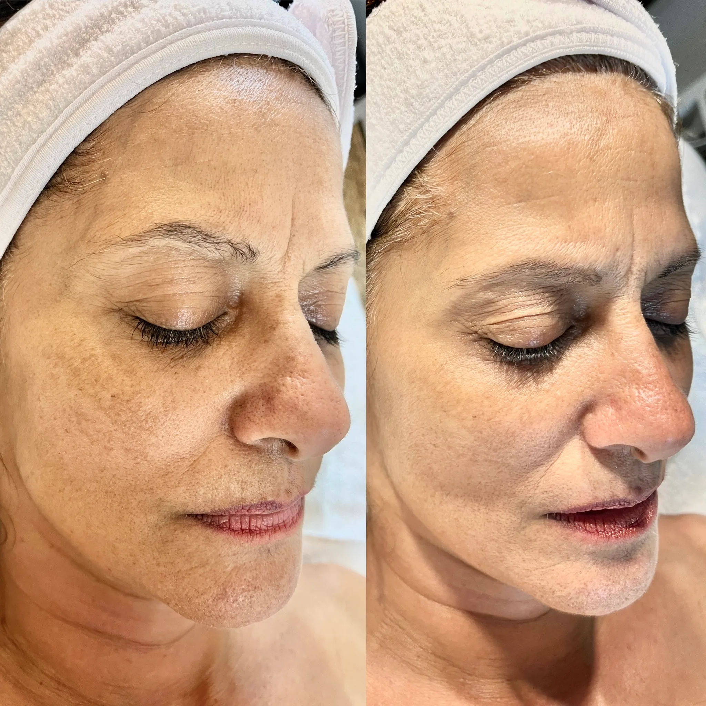
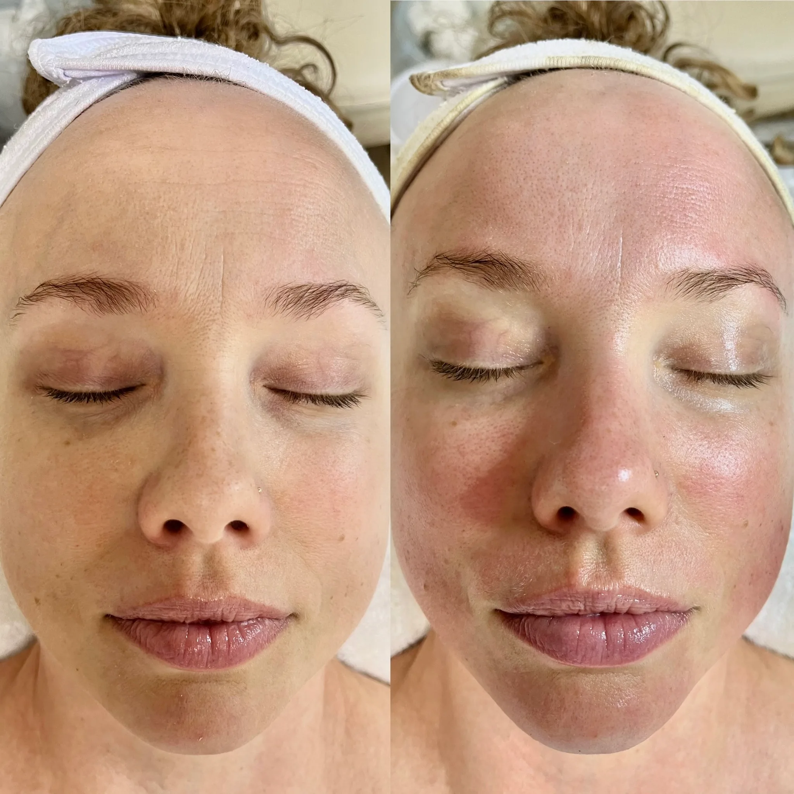
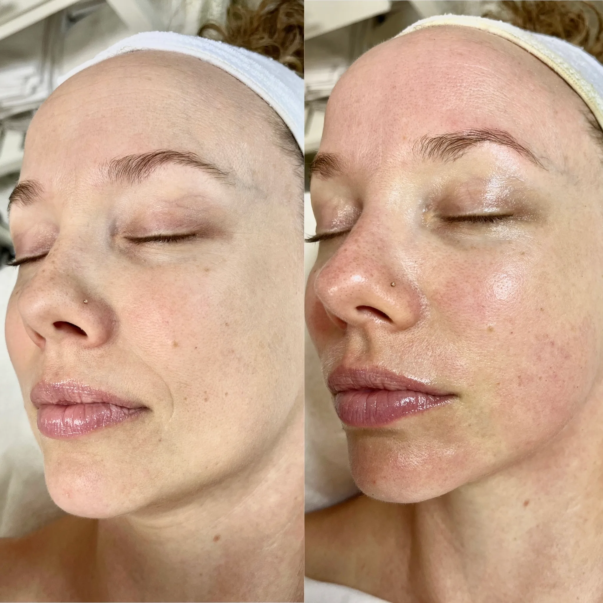

I was skeptical after countless treatments for my melasma, but Nikolle's method truly transformed my skin. My melasma has noticeably faded.
Melani S.



I was skeptical after countless treatments for my melasma, but Nikolle's method truly transformed my skin. My melasma has noticeably faded.
Nikolle's treatments are unlike anything I've experienced before. Her knowledge, gentle touch and personalized care have transformed my skin.
She encouraged me to be patient and trust the process. My skin became brighter, healthier, with almost no signs of hyperpigmentation.
Nikolle and her expertise are a delight and gift to Honolulu. A top-tier, pampered experience.